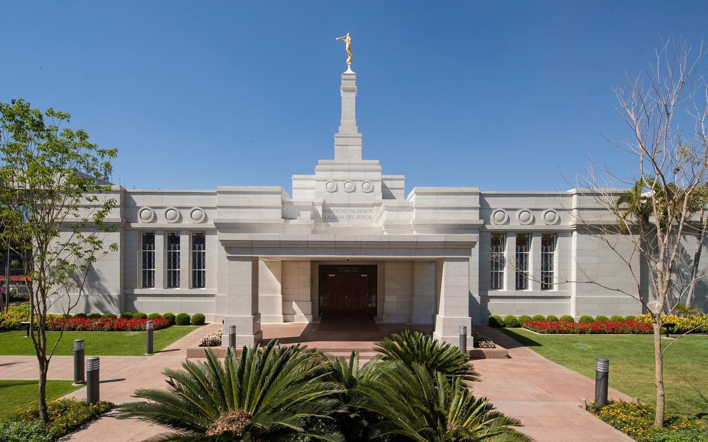
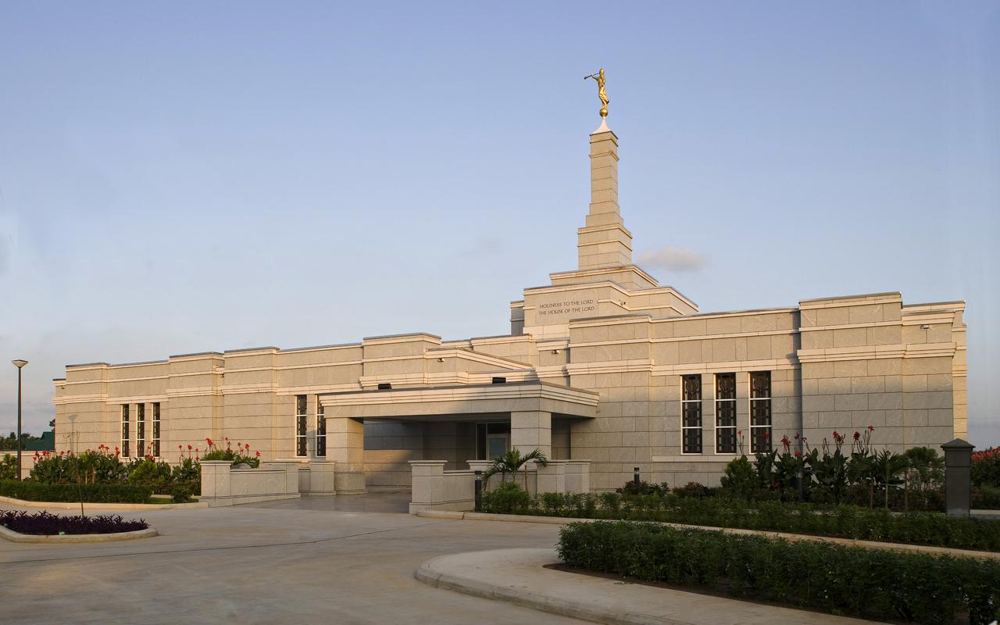
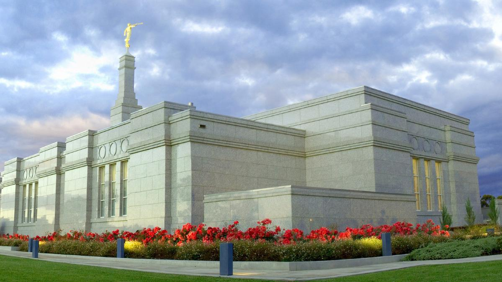
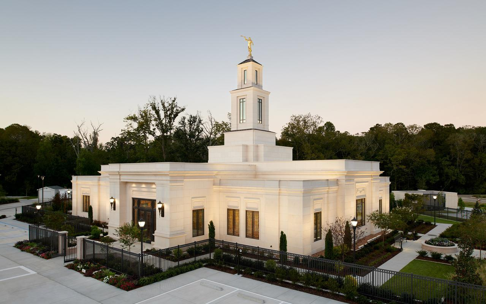

Nigeria Explorer
Home
Culture & Attractions
Economy & Innovation
Culture & Attractions
Explore Nigeria’s diverse cultural heritage, festivals, and historic sites.
Home
Barranquilla Columblia
Ariquipa Peru temple

Asuncion Paraguay

Aba nigeria temple
Accra ghana temple

Adelaide Australia temple
Albuquerque temple
Anchorage temple
Atlanta Georgia temple

luisna temple